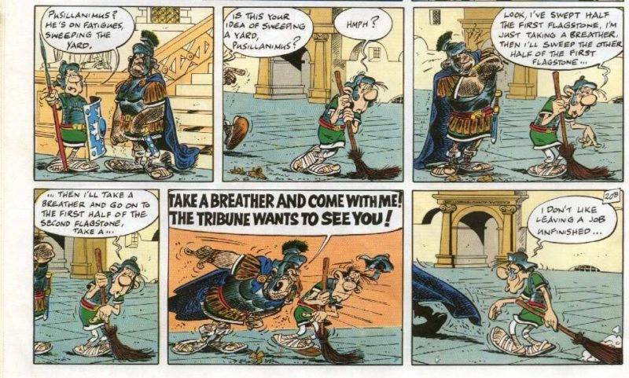
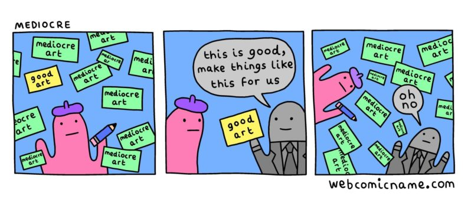

Chapter 2
Regular heroes are excellent people. Mediocrity is an anti-heroic ethos, but not along either of the usual dimensions of anti-heroism or villainy. The antihero and villain embody excellence of a sort similar to the hero's. They merely bring different goals and values to the party. The anti-excellence hero is the comic hero. In Asterix and the Chieftain's Shield we encounter Caius Pusilanimus, perhaps the most elemental example of a mediocre comic hero (though he's a side character in the story).
Where the hero reluctantly accepts his own exceptional nature, the mediocre comic hero eagerly embraces his own unexceptional nature and schemes to gain rewards out of proportion with its potentialities. Where the hero embodies fight, the comic hero embodies flight. Where the hero puts in 110%, the comic hero gets by with 60%. Where the hero aims to win honorably, the comic hero aims to survive by any means possible, and live to flee another day. Where the hero's moments of weakness are marked by self-doubt and fear (usually on behalf of others, rather than for themselves), the comic hero's moments of weakness are marked by a failure to be mediocre. An embarrassingly heroic act, for example. Or idealistic fervor descending as a momentary madness. My new favorite example of a mediocre comic hero is the wizard Rincewind in Terry Pratchett's Discworld novels. For the mediocre comic hero, impact is a function, not of exceptional traits, but of surviving long enough to get lucky in exceptional environments. This comic from webcomicname.com gets at this numbers-game aspect.
All excellence is exceptional, though not all that is exceptional is excellent. Exceptionality can be attained by either being highly present and situated in a complex environment, or by being exceptional in any environment (though sometimes, exceptional character can be canceled out by an exceptional environment).